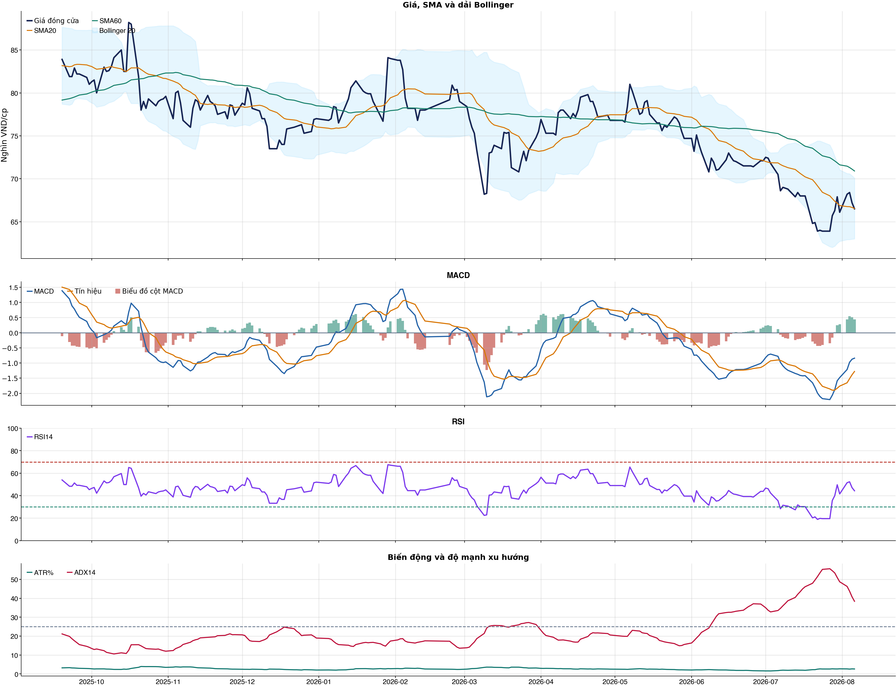
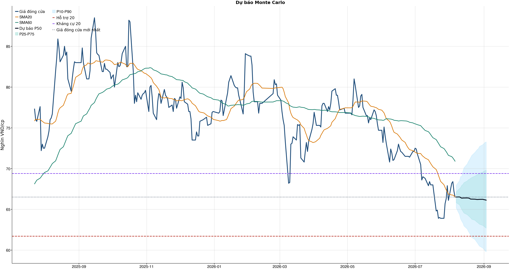
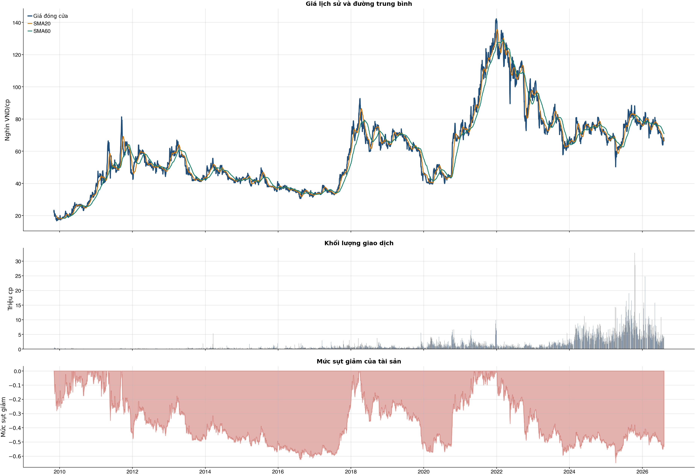

Kết quả chính
Giá hiện tại
66.50
2026-08-06 - nghìn VND/cp
Xu hướng kỹ thuật
Suy yếu / cẩn thận
Điểm -4
Trạng thái tín hiệu
CHƯA CÓ LỢI THẾ (NO_EDGE)
AUC của mô hình; Độ chính xác cân bằng của mô hình; XGBoost vượt mô hình Logistic đối chứng; Xác suất tăng đạt ngưỡng; Bối cảnh kỹ thuật đạt ngưỡng; Kiểm thử chiến lược có lợi thế ròng
Xác suất XGBoost
48.0%
Xác suất giá đóng cửa phiên tới cao hơn giá mở cửa
Dự báo
66.13
P50 sau 20 phiên - -0.6%
Quản trị rủi ro
Lợi nhuận/rủi ro 2.18
Dừng lỗ 63.88 / Mục tiêu 73.27
Tổng quan cơ bản
P/E
14.49
2026-Q2
P/B
2.45
2026-Q2
ROE
19.4%
2026-Q2
ROA
5.4%
2026-Q2
Vốn hóa thị trường
98,137.2 tỷ
2026-Q2
Tăng trưởng doanh thu
53.5%
2026-Q2 YoY
Tăng trưởng lợi nhuận
202.8%
2026-Q2 YoY
Biểu đồ kỹ thuật

Tín hiệu kỹ thuật
| Xu hướng | Cẩn thận | Giá nằm dưới SMA60. |
| MACD | Tích cực | MACD trên signal, histogram dương. |
| RSI14 | Yếu | RSI 44.3. |
| Bollinger | Ổn định | Giá nằm trong dải Bollinger. |
| ADX | Xu hướng giảm | ADX 38.4, -DI vượt +DI. |
| Thanh khoản | Thấp | 0.54 lần trung bình. |
| Stochastic | Yếu lại | %K nằm dưới %D. |
So sánh mô hình
| XGBoost | 0.498 | AUC 0.494 |
| Logistic | 0.500 | AUC 0.511 |
| Đa số | 0.500 | Mốc so sánh |
Kiểm thử chiến lược ngoài mẫu sau chi phí
| Lợi nhuận ròng | -15.4% | 649 quan sát ngoài mẫu |
| Sharpe | -1.33 | Sau chi phí |
| Mức sụt giảm tối đa | -18.3% | 17 vòng giao dịch |
| Chi phí giả định | 50.0 bps | Một vòng mua và bán |
Mức độ quan trọng của đặc trưng
| close_vs_sma20 | 20.78 | Mức đóng góp |
| volume_z_20 | 13.79 | Mức đóng góp |
| relative_strength_20d | 13.33 | Mức đóng góp |
| range_pct | 12.94 | Mức đóng góp |
| atr_pct_14 | 12.34 | Mức đóng góp |
| close_vs_sma60 | 12.16 | Mức đóng góp |
| return_kurtosis_20d | 11.84 | Mức đóng góp |
| return_skew_20d | 11.68 | Mức đóng góp |
Điều kiện phát hành tín hiệu
| AUC của mô hình | KHÔNG ĐẠT | Điều kiện phát hành tín hiệu |
| Độ chính xác cân bằng của mô hình | KHÔNG ĐẠT | Điều kiện phát hành tín hiệu |
| XGBoost vượt mô hình Logistic đối chứng | KHÔNG ĐẠT | Điều kiện phát hành tín hiệu |
| Xác suất tăng đạt ngưỡng | KHÔNG ĐẠT | Điều kiện phát hành tín hiệu |
| Bối cảnh kỹ thuật đạt ngưỡng | KHÔNG ĐẠT | Điều kiện phát hành tín hiệu |
| Tỷ lệ lợi nhuận/rủi ro đạt ngưỡng | ĐẠT | Điều kiện phát hành tín hiệu |
| Dữ liệu còn mới | ĐẠT | Điều kiện phát hành tín hiệu |
| Có khối lượng vị thế hợp lệ | ĐẠT | Điều kiện phát hành tín hiệu |
| Có kết quả kiểm thử chiến lược ngoài mẫu | ĐẠT | Điều kiện phát hành tín hiệu |
| Mẫu kiểm thử chiến lược đủ lớn | ĐẠT | Điều kiện phát hành tín hiệu |
| Kiểm thử chiến lược có lợi thế ròng | KHÔNG ĐẠT | Điều kiện phát hành tín hiệu |
Quản trị rủi ro
| Rủi ro/lệnh | 1.0% | 1,000,000 VND |
| Mức dừng lỗ | 63.88 | Rủi ro mỗi cổ phiếu 2.95 |
| Mục tiêu 1 | 73.27 | Lợi nhuận/rủi ro 2.18 |
| Mục tiêu 2 | 73.27 | Dự báo/kháng cự |
Phân tích cơ bản
| P/E | 14.49 | 2026-Q2 |
| P/B | 2.45 | 2026-Q2 |
| P/S | 1.02 | 2026-Q2 |
| ROE | 19.4% | 2026-Q2 |
| ROA | 5.4% | 2026-Q2 |
| Gross margin | 31.6% | 2026-Q2 |
| Net margin | 10.3% | 2026-Q2 |
| Debt/Equity | 1.88 | 2026-Q2 |
| Current ratio | 0.87 | 2026-Q2 |
| NPL | 0.0% | 2026-Q2 |
| Dividend yield | 0.0% | 2026-Q2 |
| Market cap | 98,137.2 tỷ | 2026-Q2 |
| Revenue Growth | 53.5% | 2026-Q2 YoY |
| Profit Growth | 202.8% | 2026-Q2 YoY |
Dự báo ngắn hạn
| 2026-08-07 | 66.51 | P10 65.18 / P90 67.94 |
| 2026-08-10 | 66.52 | P10 64.36 / P90 68.52 |
| 2026-08-11 | 66.44 | P10 63.82 / P90 69.03 |
| 2026-08-12 | 66.37 | P10 63.56 / P90 69.04 |
| 2026-08-13 | 66.38 | P10 63.34 / P90 69.65 |
| 2026-08-14 | 66.39 | P10 62.97 / P90 70.10 |
| 2026-08-17 | 66.40 | P10 62.59 / P90 70.58 |
| 2026-08-18 | 66.39 | P10 62.29 / P90 70.88 |
Biểu đồ dự báo

Lịch sử giá và mức sụt giảm

Báo cáo dùng để học tập và lập kịch bản, không phải khuyến nghị mua/bán.